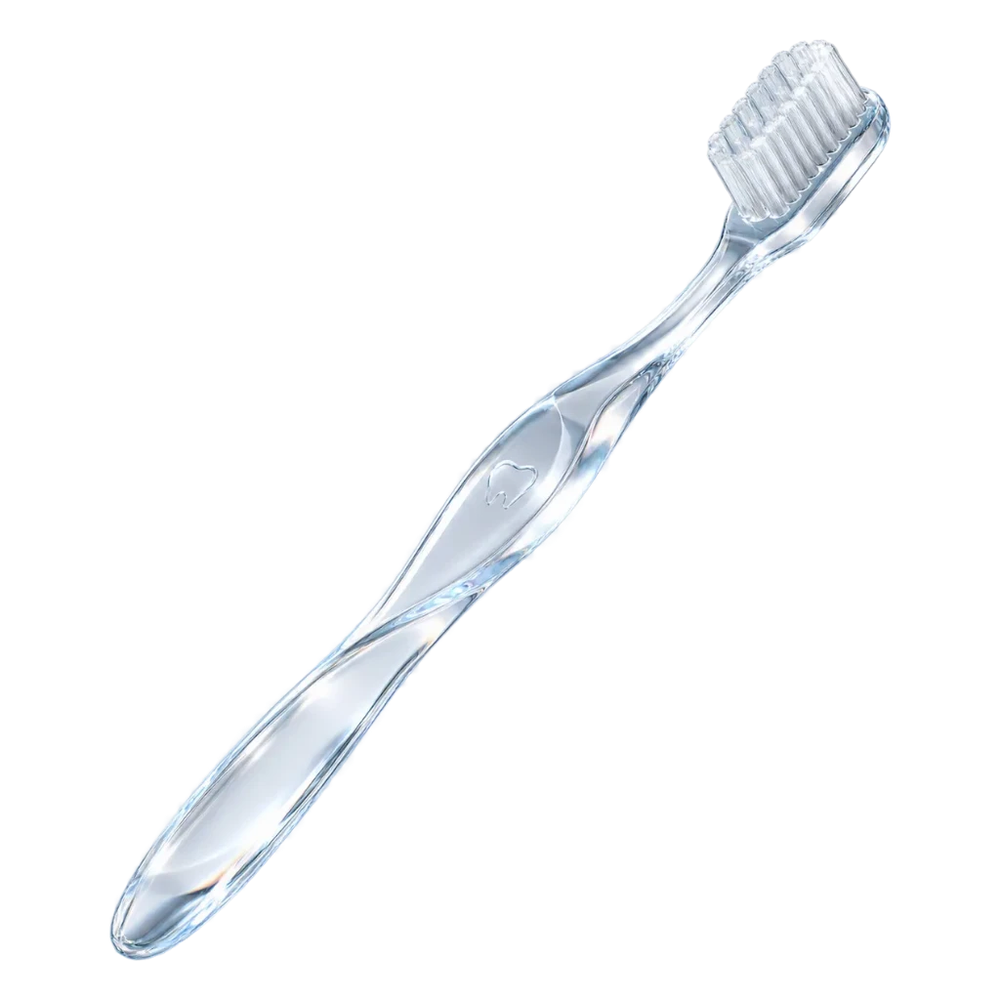

стоматология · Астана
Тридцать два повода улыбаться
Взрослый и детский приём, имплантация, ортодонтия и неотложная помощь на Сарайшык, 34.

4,9273 отзывов в 2ГИС
- Снимки на местепанорамный снимок в клинике
- Удобная оплатакарта, QR-код, перевод
- Пандусдоступная среда
- Без выходныхприём каждый день

О клинике
Denta Lux 32
Взрослый и детский приём, имплантация, ортодонтия и неотложная помощь на Сарайшык, 34.
Подробнее в 2ГИС- 7/7приём каждый день
- 7направлений лечения
Наши услуги
Что мы лечим
Имплантация
Восстановление утраченных зубов на имплантах.

Ортодонтия
Брекеты и коррекция прикуса.

Ортопедия
Коронки и протезирование.

Хирургия
Удаление зубов, в том числе зубов мудрости.

Детская стоматология
Лечение молочных и постоянных зубов у детей.

Пародонтология
Лечение дёсен и профессиональная гигиена.

3D-диагностика
КТ и панорамные снимки в клинике.
Цены
Стоимость лечения
Демо-данные — заменим на ваши
Имплантация
- Имплант под ключот 190 000 ₸
- Синус-лифтинг закрытыйот 120 000 ₸
Ортодонтия
- Брекет-система, 2 челюстиот 400 000 ₸
- Ретейнерот 45 000 ₸
Ортопедия
- Металлокерамическая коронкаот 45 000 ₸
- Циркониевая коронкаот 100 000 ₸
- Винирот 90 000 ₸
Хирургия
- Удаление зуба простоеот 20 000 ₸
- Удаление зуба мудростиот 30 000 ₸
Детская стоматология
- Лечение молочного зубаот 15 000 ₸
- Детская чисткаот 10 000 ₸
Пародонтология
- Профессиональная чистка Air-Flowот 20 000 ₸
- Лечение дёсенот 15 000 ₸
Все цены
3D-диагностика
- КТ одной челюстиот 15 000 ₸
- Панорамный снимокот 5 000 ₸
Примерные цены по Астане для демонстрации. Точную стоимость назовут после консультации.
или позвоните +7 775 177 51 15
Команда
Врачи
Демо-данные — заменим на ваши
Стоматолог-терапевт
Стаж 12 лет
Хирург-имплантолог
Стаж 15 лет
Ортодонт
Стаж 9 лет
Детский стоматолог
Стаж 7 лет
Наши работы
До и после
Демо-данные — заменим на ваши

Потяните ползунок, чтобы сравнить состояние до и после лечения.
Записаться на консультациюОтзывы
Нам доверяют пациенты
Оценка и отзывы в 2ГИС. Читайте их целиком на сайте 2ГИС.
Из отзывов
Что пишут пациенты
Демо-данные — заменим на ваши
Очень боялась лечить зубы, но всё прошло без боли. Врач объяснял каждый шаг.
Пациентка, лечение кариеса Стоимость назвали сразу, и она не изменилась. Записался на следующий приём.
Пациент, детская стоматология Аккуратно, спокойно и без очередей. Рекомендую знакомым.
Пациентка, консультация
Консультация
Запишитесь на приём
Ежедневно 09:00–19:00, перерыв 13:00–14:00 · улица Сарайшык, 34 (ВП 33а)

Контакты
Позвоните нам
- улица Сарайшык, 34 (ВП 33а), Астана
- Ежедневно 09:00–19:00, перерыв 13:00–14:00